Uncertainty Quantification
Source:vignettes/articles/uncertainty-quantification.Rmd
uncertainty-quantification.RmdOverview
Point predictions alone are insufficient for critical applications. fdars provides four complementary approaches to uncertainty quantification for functional regression models:
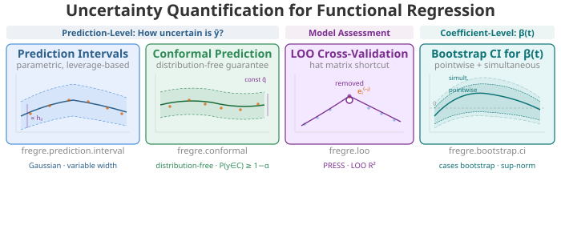
| Method | Question | Assumptions | Current Models | Function |
|---|---|---|---|---|
| Prediction Intervals | How uncertain is ? | Gaussian errors | lm only | fregre.prediction.interval() |
| Conformal Prediction | How uncertain is ? | None (distribution-free) | lm, np, elastic, logistic |
conformal.fregre.lm(),
cv.conformal.regression(), etc. |
| LOO Cross-Validation | How well does the model generalise? | None | lm only | fregre.loo() |
| Bootstrap CI for | Where is the coefficient significant? | None (bootstrap) | lm + logistic | fregre.bootstrap.ci() |
Supported Models
Most methods currently require a fregre.lm model (fitted
by fregre.lm()). fregre.bootstrap.ci() also
supports functional.logistic models.
Prediction intervals and LOO-CV require the hat
matrix
,
residual standard error
,
and the FPC score matrix
— internal structures only fregre.lm provides.
Nonparametric models like fregre.np() do not produce a hat
matrix or parametric variance estimate, so the formulas for prediction
intervals and LOO-CV (which exploit
)
do not apply.
Conformal prediction is different. The algorithm is
inherently model-agnostic — it only needs a
fit/predict function and a set of calibration
residuals. The coverage guarantee
holds for any model, with no distributional assumptions.
fdars provides conformal inference for linear
(fregre.lm), nonparametric (fregre.np),
elastic regression, elastic PCR, and logistic models, via split,
cross-validation (CV+), jackknife+, and generic conformal interfaces.
See Advanced Conformal Methods
for details.
Setup
n <- 80
m <- 100
t_grid <- seq(0, 1, length.out = m)
beta_true <- 2 * dnorm(t_grid, 0.3, 0.08) - 1.5 * dnorm(t_grid, 0.7, 0.08)
beta_true <- beta_true / max(abs(beta_true))
X <- matrix(0, n, m)
for (i in 1:n) {
X[i, ] <- sin(2 * pi * t_grid) + 0.5 * rnorm(1) * cos(4 * pi * t_grid) +
rnorm(m, sd = 0.1)
}
dt <- t_grid[2] - t_grid[1]
y <- numeric(n)
for (i in 1:n) {
y[i] <- sum(beta_true * X[i, ]) * dt + rnorm(1, sd = 0.3)
}
fdataobj <- fdata(X, argvals = t_grid)
model <- fregre.lm(fdataobj, y, ncomp = 5)Prediction-Level Uncertainty
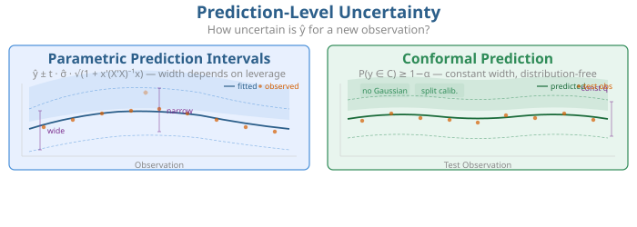
Both methods answer the same question — how uncertain is for a new observation? — but differ in assumptions and interval shape.
Parametric Prediction Intervals
Requires fregre.lm.
In plain English. A prediction interval is like an error bar around each prediction. It says: “the true value will fall in this range with 95% confidence.” Observations that look unusual compared to the training data get wider intervals — the model is less sure about them.
Mathematically. For a new observation with FPC scores , the prediction interval accounts for both estimation uncertainty and irreducible noise:
The term is the leverage — how far the new point is from the training centre in FPC score space. High leverage observations receive wider intervals.
pred_int <- fregre.prediction.interval(
model,
train.data = fdataobj,
new.data = fdataobj[1:20],
confidence = 0.95
)
df_pi <- data.frame(
Observation = 1:20,
Observed = y[1:20],
Fitted = pred_int$predictions,
Lower = pred_int$lower,
Upper = pred_int$upper
)
ggplot(df_pi, aes(x = .data$Observation)) +
geom_ribbon(aes(ymin = .data$Lower, ymax = .data$Upper),
fill = "#4A90D9", alpha = 0.2) +
geom_point(aes(y = .data$Observed), color = "#D55E00", size = 2) +
geom_line(aes(y = .data$Fitted), color = "#4A90D9", linewidth = 1) +
labs(title = "95% Prediction Intervals",
subtitle = "Blue band = prediction interval, red points = observed values",
x = "Observation", y = "y")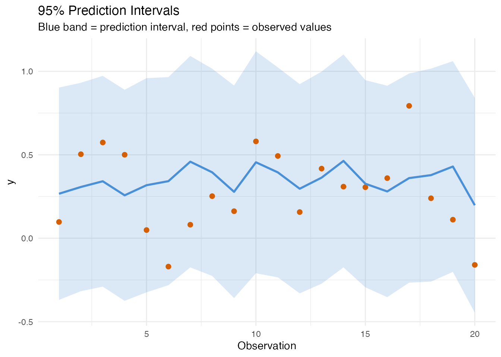
Coverage and Width
covered <- df_pi$Observed >= df_pi$Lower & df_pi$Observed <= df_pi$Upper
cat("Coverage:", round(mean(covered) * 100, 1), "% (expected: 95%)\n")
#> Coverage: 100 % (expected: 95%)Wider intervals indicate observations far from the training data centre:
df_pi$Width <- df_pi$Upper - df_pi$Lower
ggplot(df_pi, aes(x = .data$Observation, y = .data$Width)) +
geom_col(fill = "#7B2D8E", alpha = 0.7) +
labs(title = "Prediction Interval Widths",
subtitle = "Wider = more uncertain (high leverage)",
x = "Observation", y = "Interval Width")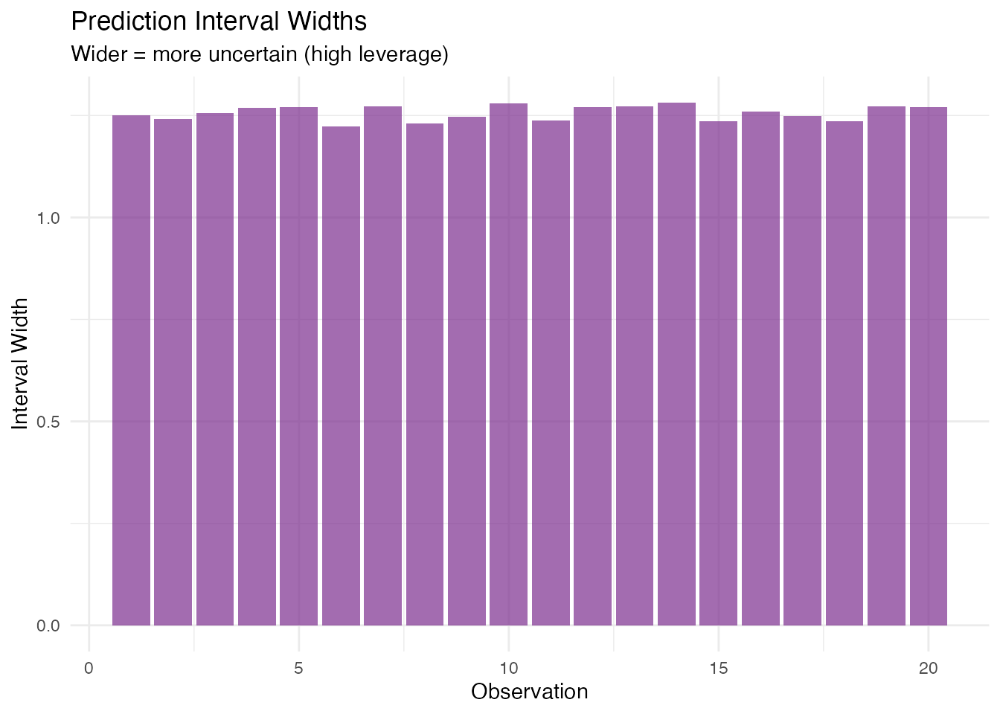
Conformal Prediction
Split conformal is shown here for fregre.lm. See Advanced Conformal Methods below
for CV+, jackknife+, nonparametric, and generic conformal
variants.
In plain English. Conformal prediction makes no assumptions about the data distribution. Instead of relying on Gaussian theory, it sets aside a portion of the training data as a “calibration set”, measures how wrong the model is on those held-out points, and uses the worst-case error as the interval width. The result: guaranteed coverage (e.g., 90% of future observations will fall in the interval) no matter what the data looks like.
Why is it model-agnostic in theory? The algorithm
only needs two things: (1) a fit function that trains a
model on data, and (2) a predict function that produces
predictions for new data. It computes residuals on the calibration set,
takes the
-quantile,
and adds/subtracts that from predictions. No hat matrix, no variance
formula, no distributional assumptions.
Mathematically. (Vovk et al., 2005) The split conformal approach provides finite-sample coverage:
for any distribution of . Given calibration residuals and quantile -th order statistic, the interval is
All intervals have the same width — unlike parametric intervals, which vary with leverage.
# Train/test split
train_fd <- fdataobj[1:60]
train_y <- y[1:60]
test_fd <- fdataobj[61:80]
test_y <- y[61:80]
model_train <- fregre.lm(train_fd, train_y, ncomp = 5)
# Conformal prediction intervals (90% coverage)
conf <- fregre.conformal(
model_train,
train.data = train_fd,
train.y = train_y,
test.data = test_fd,
cal.fraction = 0.25,
alpha = 0.10,
seed = 42
)
cat("Residual quantile:", round(conf$residual_quantile, 4), "\n")
#> Residual quantile: 0.8155
df_conf <- data.frame(
Observation = 1:20,
Observed = test_y,
Predicted = conf$predictions,
Lower = conf$lower,
Upper = conf$upper
)
ggplot(df_conf, aes(x = .data$Observation)) +
geom_ribbon(aes(ymin = .data$Lower, ymax = .data$Upper),
fill = "#2E8B57", alpha = 0.2) +
geom_point(aes(y = .data$Observed), color = "#D55E00", size = 2) +
geom_line(aes(y = .data$Predicted), color = "#2E8B57", linewidth = 1) +
labs(title = "90% Conformal Prediction Intervals",
subtitle = "Green band = conformal interval (distribution-free)",
x = "Test Observation", y = "y")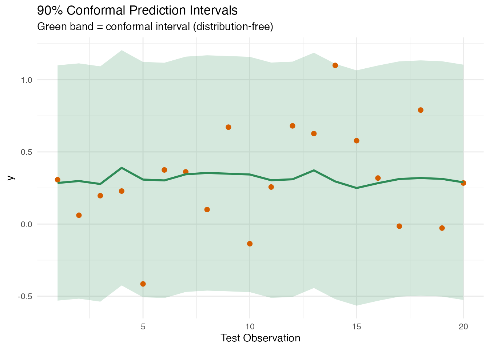
Comparison: Parametric vs Conformal
| Parametric | Conformal | |
|---|---|---|
| Assumptions | Gaussian errors | None |
| Width | Variable (leverage-dependent) | Constant |
| Coverage guarantee | Exact if assumptions hold | Finite-sample, always |
| Data cost | Uses all training data | Sacrifices a calibration fraction |
| Model support |
fregre.lm only |
Any model (in theory) |
pred_param <- fregre.prediction.interval(
model_train, train.data = train_fd, new.data = test_fd, confidence = 0.90
)
df_compare <- data.frame(
Method = rep(c("Parametric", "Conformal"), each = 20),
Width = c(pred_param$upper - pred_param$lower,
conf$upper - conf$lower)
)
ggplot(df_compare, aes(x = .data$Method, y = .data$Width, fill = .data$Method)) +
geom_boxplot(alpha = 0.7) +
scale_fill_manual(values = c("Parametric" = "#4A90D9",
"Conformal" = "#2E8B57")) +
labs(title = "Interval Width: Parametric vs Conformal",
subtitle = "Both at 90% nominal level",
y = "Interval Width") +
theme(legend.position = "none")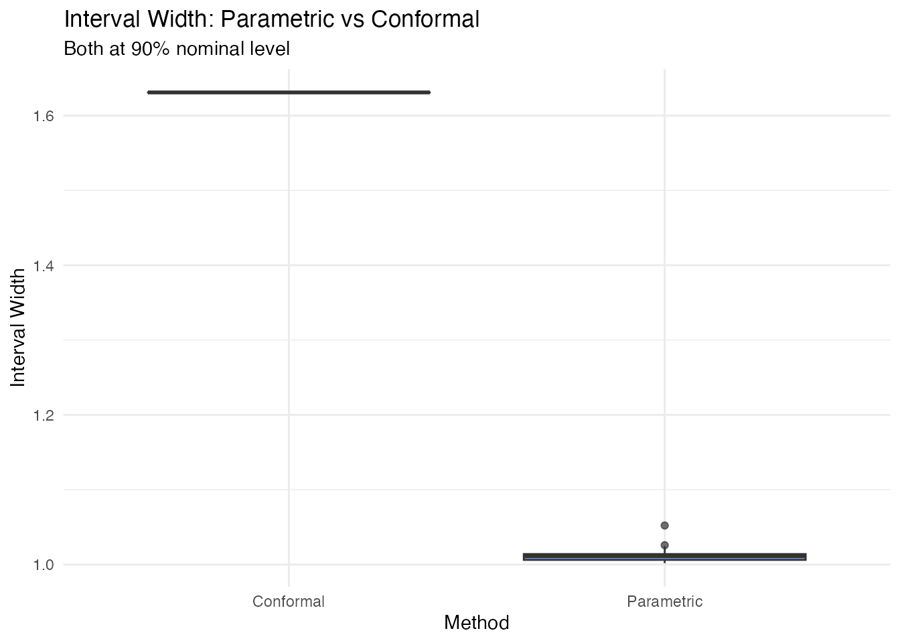
Model Assessment: LOO Cross-Validation
Requires fregre.lm.
In plain English. Leave-one-out cross-validation asks: “If I re-fit the model without observation , how well does it predict that observation?” Doing this for every observation gives an honest estimate of how the model will perform on new data. A large gap between in-sample and LOO signals overfitting — the model has memorised the training data.
The clever part: for linear models, you don’t actually need to re-fit times. The hat matrix gives you the answer in one step.
Mathematically. The LOO residual for observation is efficiently computed via the hat matrix:
where is the -th diagonal of . High-leverage points ( close to 1) have inflated LOO residuals — removing them changes the fit substantially.
The PRESS statistic is
and the LOO provides an honest estimate of out-of-sample performance.
loo <- fregre.loo(model, data = fdataobj, y = y)
cat("PRESS:", round(loo$press, 4), "\n")
#> PRESS: 8.0184
cat("LOO R\u00b2:", round(loo$loo_r_squared, 4), "\n")
#> LOO R²: -0.0978
cat("In-sample R\u00b2:", round(model$r.squared, 4), "\n")
#> In-sample R²: 0.047A large gap between in-sample and LOO indicates overfitting.
df_loo <- data.frame(
Observation = seq_along(loo$loo_residuals),
LOO_Residual = loo$loo_residuals,
In_Sample_Residual = model$residuals
)
ggplot(df_loo, aes(x = .data$In_Sample_Residual, y = .data$LOO_Residual)) +
geom_point(color = "#7B2D8E", size = 2, alpha = 0.7) +
geom_abline(slope = 1, intercept = 0, linetype = "dashed",
color = "gray50") +
labs(title = "In-Sample vs LOO-CV Residuals",
subtitle = "Points above the diagonal indicate optimistic in-sample fit",
x = "In-sample Residual", y = "LOO Residual")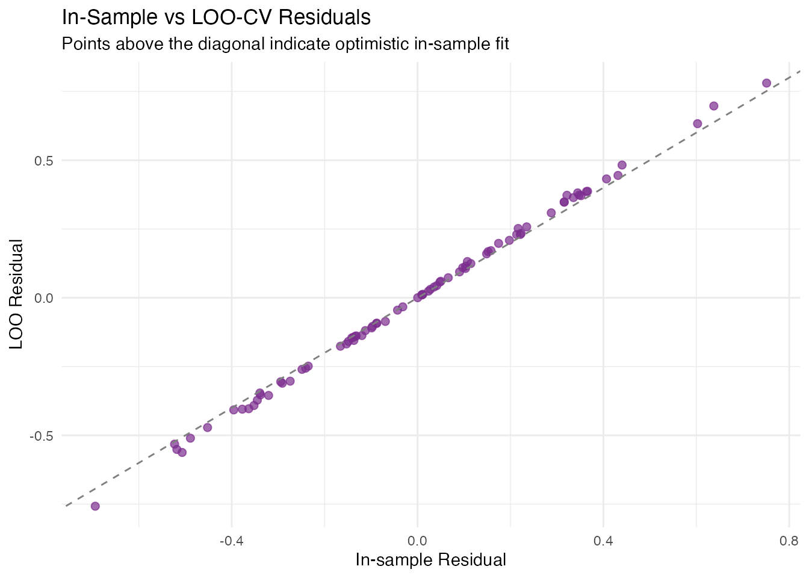
df_leverage <- data.frame(
Observation = seq_along(loo$loo_residuals),
LOO_Residual = abs(loo$loo_residuals),
In_Sample_Residual = abs(model$residuals)
)
df_leverage$Inflation <- df_leverage$LOO_Residual / df_leverage$In_Sample_Residual
ggplot(df_leverage, aes(x = .data$Observation, y = .data$Inflation)) +
geom_col(fill = "#7B2D8E", alpha = 0.6) +
geom_hline(yintercept = 1, linetype = "dashed", color = "gray50") +
labs(title = "LOO Residual Inflation Factor",
subtitle = "|LOO residual| / |in-sample residual| — high values = high leverage",
x = "Observation", y = "Inflation (1 / (1 − h_ii))")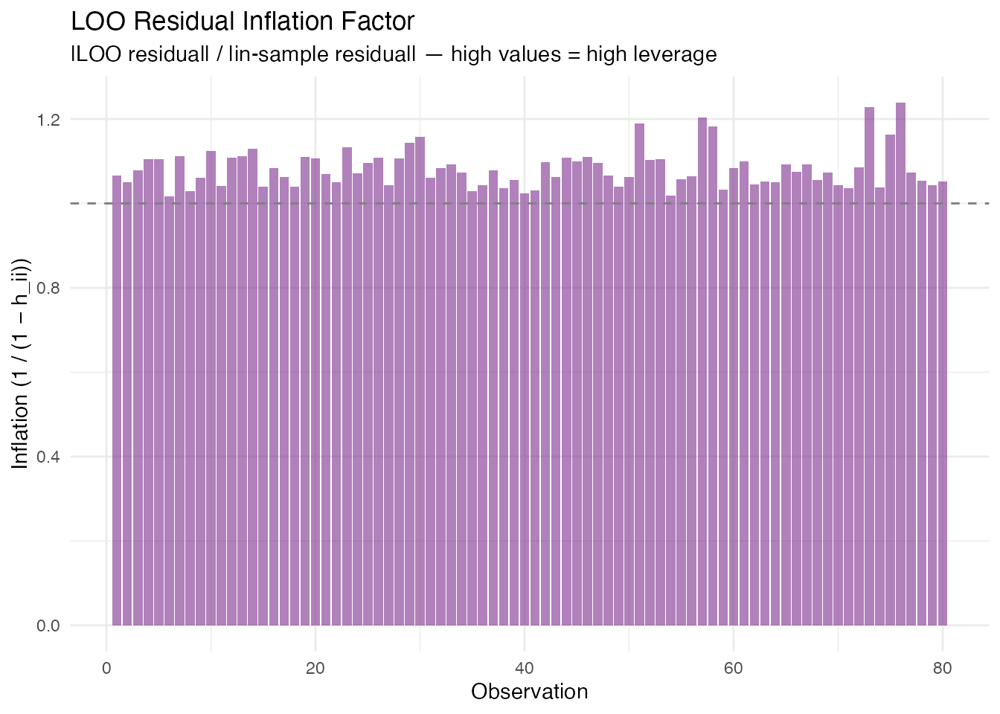
Coefficient Uncertainty: Bootstrap CI for β(t)
Supports both fregre.lm and
functional.logistic.
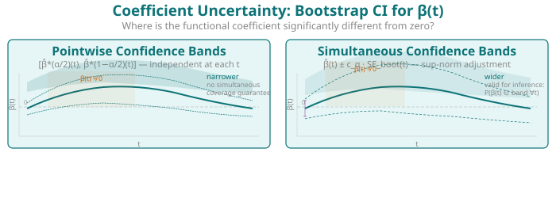
In plain English. Previous sections quantified uncertainty in predictions (). This section asks a different question: where on the functional domain does the predictor actually matter? The functional coefficient tells you how each part of the curve contributes to the response. Bootstrap confidence bands show which parts of are reliably different from zero — those are the regions where the predictor has a statistically significant effect.
The bootstrap works by resampling the data many times, fitting the model each time, and observing how varies. If it varies a lot at some , we’re uncertain about that part of the coefficient.
Mathematically. Given bootstrap replicates , we construct two types of confidence bands:
Pointwise Bands
At each grid point independently:
where is the -quantile of the bootstrap distribution at . This controls coverage at each separately but not simultaneously across all .
ci <- fregre.bootstrap.ci(model, n.boot = 200, alpha = 0.05, seed = 42)
print(ci)
#> Bootstrap Confidence Intervals for beta(t)
#> Model type: fregre.lm
#> Alpha: 0.05
#> Bootstrap replicates: 200 / 200 succeeded
#> Grid points: 100
plot(ci)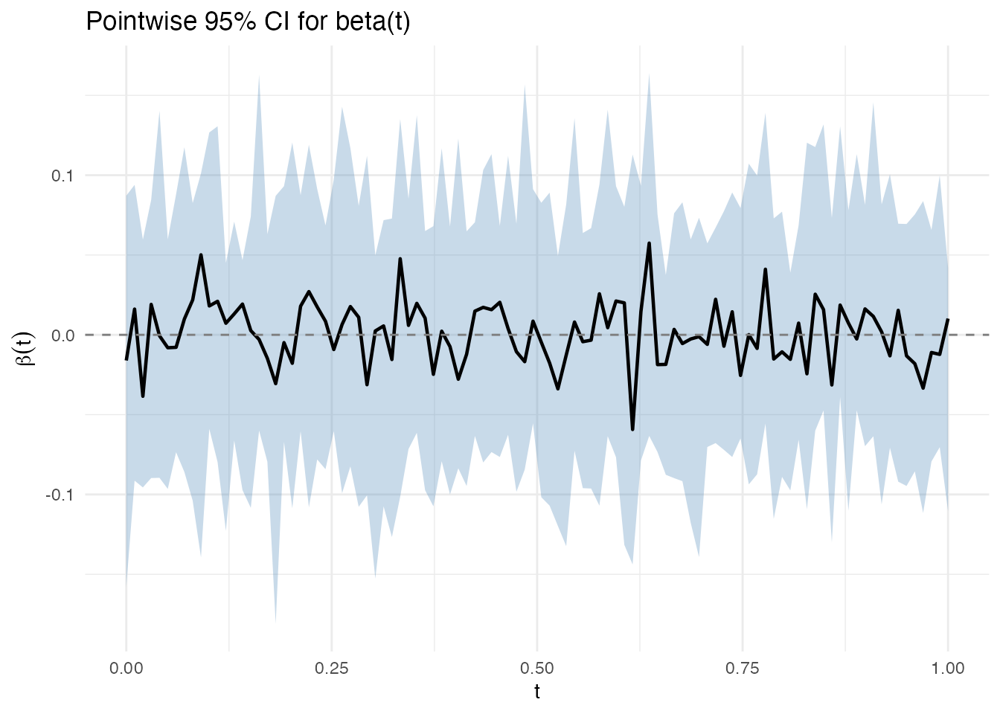
Simultaneous Bands
In plain English. Pointwise bands control the error at each grid point separately. If you have 100 grid points and test each at 5%, you’d expect about 5 false positives. Simultaneous bands are wider — they guarantee that the entire curve lies within the band with probability. Regions where the simultaneous band excludes zero are statistically significant at the chosen level, corrected for the multiple testing across all .
Mathematically. The simultaneous band uses the sup-norm critical value estimated from the bootstrap distribution:
where is the -quantile of over the bootstrap replicates.
plot(ci, simultaneous = TRUE)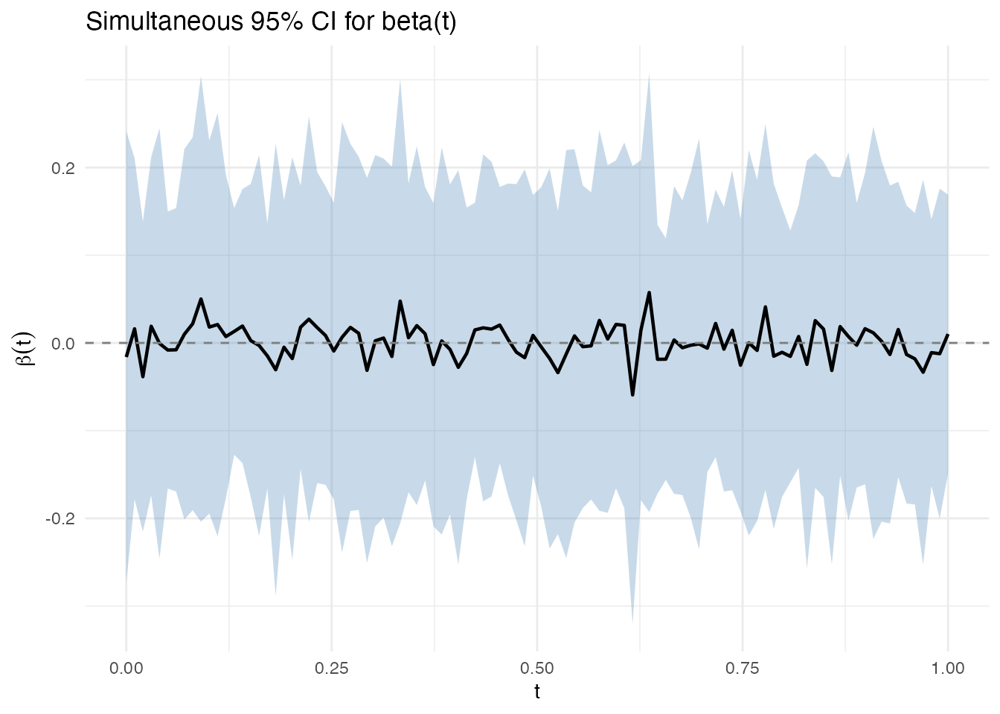
The simultaneous band is wider because it guarantees , rather than controlling coverage at each separately.
Advanced Conformal Methods
The split conformal method above uses a single calibration/training split. fdars also provides cross-conformal (CV+) and jackknife+ variants that use all data for both training and calibration, typically producing tighter intervals.
Cross-Conformal (CV+) Regression
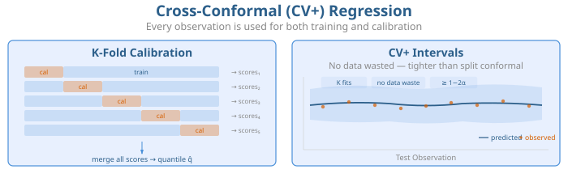
CV+ conformal runs K-fold cross-validation internally: each fold serves as the calibration set for the model trained on the remaining folds. This avoids the data-splitting penalty of split conformal — all observations contribute to both training and calibration.
The coverage guarantee is slightly weaker than split conformal ( in theory), but empirically CV+ intervals are tighter with near-nominal coverage.
# CV+ conformal with fregre.lm (5-fold)
cv_conf <- cv.conformal.regression(
train_fd, train_y, test_fd,
method = "fregre.lm",
ncomp = 5, n.folds = 5,
alpha = 0.10, seed = 42
)
cat("CV+ coverage:", round(cv_conf$coverage * 100, 1), "%\n")
#> CV+ coverage: 91.7 %
cat("CV+ mean width:", round(mean(cv_conf$upper - cv_conf$lower), 4), "\n")
#> CV+ mean width: 0.9395CV+ also works with the nonparametric model fregre.np,
which has no parametric prediction intervals — conformal is the
only rigorous UQ method available:
cv_conf_np <- cv.conformal.regression(
train_fd, train_y, test_fd,
method = "fregre.np",
ncomp = 5, n.folds = 5,
alpha = 0.10, seed = 42
)
cat("CV+ (nonparametric) coverage:", round(cv_conf_np$coverage * 100, 1), "%\n")
#> CV+ (nonparametric) coverage: 91.7 %Jackknife+ Regression
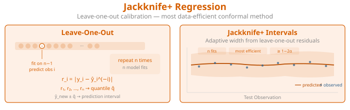
Jackknife+ is the leave-one-out analogue: each training observation is left out once, the model is fitted on the remaining observations, and the left-out residual calibrates the interval. This is the most data-efficient conformal method but requires model fits.
Generic Conformal from a Fitted Model
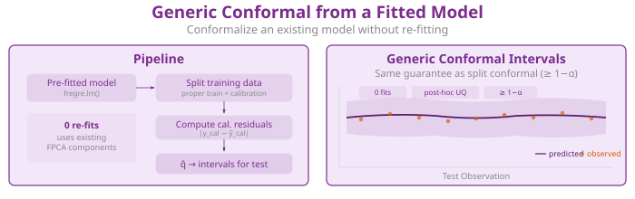
If you already have a fitted fregre.lm model,
conformal.generic.regression() constructs conformal
intervals without re-fitting. It uses the model’s FPCA components to
split and calibrate internally:
gen_conf <- conformal.generic.regression(
model_train, train_fd, train_y, test_fd,
cal.fraction = 0.25, alpha = 0.10, seed = 42
)
#> Warning: conformal.generic.regression uses the pre-fitted model without
#> refitting. Calibration residuals are in-sample, so coverage guarantee is
#> broken. Supply calibration.indices (held-out indices) for valid coverage, or
#> use conformal.fregre.lm() / cv.conformal.regression() instead.
cat("Generic conformal coverage:", round(gen_conf$coverage * 100, 1), "%\n")
#> Generic conformal coverage: 100 %Comparing All Conformal Variants
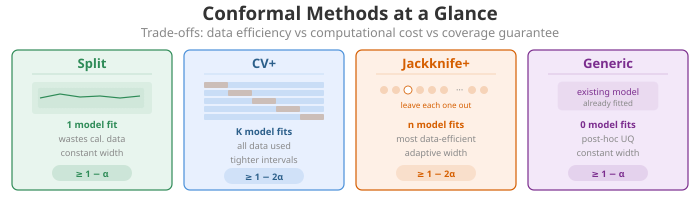
df_all <- data.frame(
Method = rep(c("Split", "CV+", "Jackknife+", "Generic"), each = length(test_y)),
Width = c(
conf$upper - conf$lower,
cv_conf$upper - cv_conf$lower,
jk$upper - jk$lower,
gen_conf$upper - gen_conf$lower
)
)
ggplot(df_all, aes(x = .data$Method, y = .data$Width, fill = .data$Method)) +
geom_boxplot(alpha = 0.7) +
scale_fill_manual(values = c("Split" = "#2E8B57", "CV+" = "#4A90D9",
"Jackknife+" = "#D55E00", "Generic" = "#7B2D8E")) +
labs(title = "Interval Width by Conformal Method",
subtitle = "All at 90% nominal level",
y = "Interval Width") +
theme(legend.position = "none")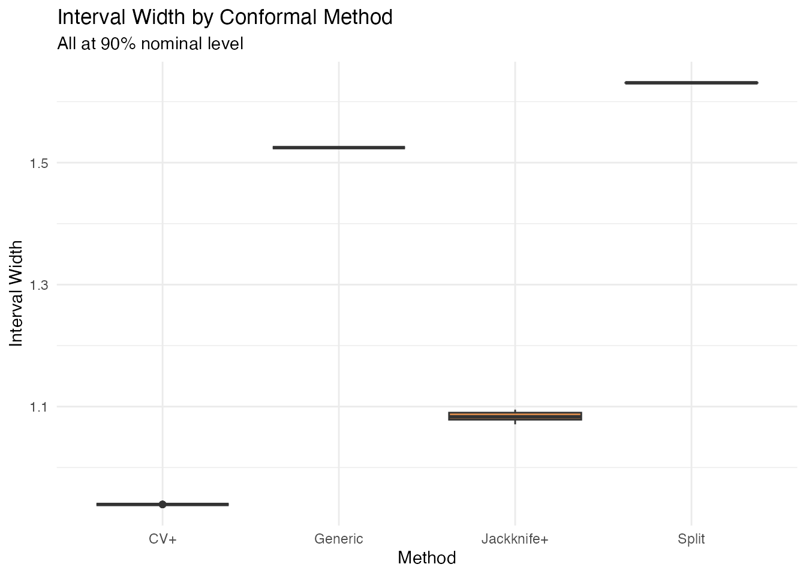
| Variant | Function | Data use | # model fits | Guarantee |
|---|---|---|---|---|
| Split | conformal.fregre.lm() |
Wastes calibration data | 1 | |
| CV+ | cv.conformal.regression() |
All data used | ||
| Jackknife+ | jackknife.plus() |
All data used | ||
| Generic | conformal.generic.regression() |
From fitted model | 0 (pre-fitted) | Heuristic only |
Generic conformal uses in-sample calibration residuals (model trained on all data). Coverage guarantee is broken. Use split or CV+ for valid coverage.
Summary
| Aspect | Prediction Intervals | Conformal | LOO-CV | Bootstrap CI |
|---|---|---|---|---|
| Target | Model fit | |||
| Models | lm only | lm, np, elastic, logistic | lm only | lm + logistic |
| Assumptions | Gaussian | None | None | None |
| Width | Variable (leverage) | Constant (split) or variable (CV+) | — | Variable (SE) |
| Guarantee | Exact if Gaussian | Finite-sample | — | Asymptotic |
| Key output | Interval bounds | Interval bounds | PRESS, LOO | Pointwise + simultaneous bands |
References
Allen, D.M. (1974). The relationship between variable selection and data augmentation and a method for prediction. Technometrics, 16(1), 125–127.
Ramsay, J.O. and Silverman, B.W. (2005). Functional Data Analysis. 2nd ed. Springer.
Vovk, V., Gammerman, A. and Shafer, G. (2005). Algorithmic Learning in a Random World. Springer.
Barber, R.F., Candes, E.J., Ramdas, A. and Tibshirani, R.J. (2021). Predictive inference with the jackknife+. Annals of Statistics, 49(1), 486–507.
Romano, Y., Patterson, E. and Candes, E. (2019). Conformalized quantile regression. Advances in Neural Information Processing Systems, 32.